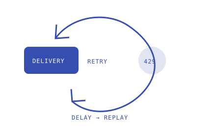

Webhook simulator
Give retries a rehearsal.
Explore backoff, rate limits, and duplicate deliveries on a timeline before wiring a webhook.

Events & retry policy
Delivery timeline
Ready when you are
Load an example or paste your own input.
How to use Replay Envelope
- Load example deliveries or paste event fixtures.
- Set retry limits, delays, and the duplicate cache duration.
- Simulate the attempts and download the timeline.